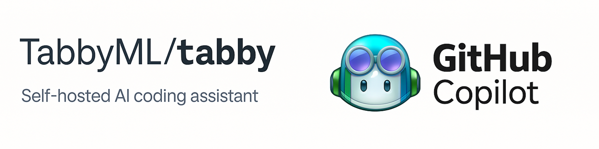
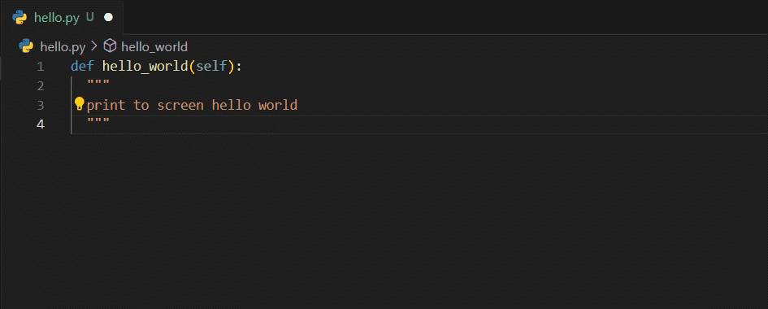
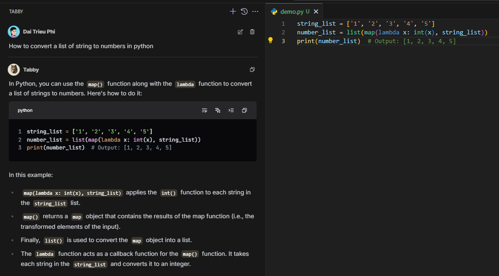
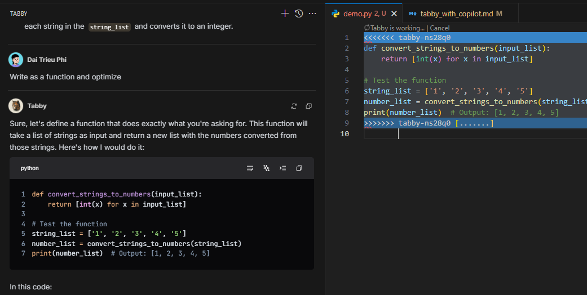

Prepared by: A&I - Coder Assistant Team
Date: 2025-04-11
Demo Audience: Project Managers, Representatives from Potential Project Teams.

This presentation visually and persuasively demonstrates the distinct and core benefits of using a locally run Coder Assistant (via Ollama hosting the model, Tabby as the client) compared to cloud solutions like GitHub Copilot, focusing on critical factors in an enterprise environment.
"This local solution offers absolute data control and security, operates without needing internet access, and has the potential for long-term cost optimization, while still providing effective developer support, although there might be certain trade-offs in terms of speed or immediate convenience compared to Copilot."
Detailed Demo:
1. Code Completion: Automatically completes code based on context, helping to speed up programming.

2. Chat with Local Model: Interact directly with the AI model running on your machine to ask questions, explain code, or generate new code without sending data externally.

3. Apply Intelligent Changes (Apply in Editor): Preview and apply AI-suggested changes directly within the editor, similar to advanced AI IDEs.

4. Fully Offline Operation: Requires no internet connection, ensuring continuous operation and security in any environment.
5. Multi-Language Support: Provides suggestions for many popular programming languages.
6. Smooth IDE Integration: Works as a familiar extension in popular IDEs like VS Code, JetBrains IDEs, etc.
7. Model Flexibility: Allows choosing and switching between different AI models (e.g., models from Ollama) to suit specific requirements or available hardware.
8. Absolute Data Security: The entire processing and suggestion process occurs on the local machine or internal infrastructure, ensuring source code never leaves your control.
Tabby also supports many other utilities and features yet to be explored.
| Criteria | Without Coding Assistant | With Coding Assistant (Tabby/Copilot) | Improvement |
|---|---|---|---|
| Coding Time | 100% (baseline) | Reduces coding time by 20-35% | ↓ 20-35% |
| Lines of Code/Hour | 100% (baseline) | Increases code output by 30-50% | ↑ 30-50% |
| Feature Completion Speed | 100% (baseline) | Increases by 15-30% | ↑ 15-30% |
| Reduced Context Switching | Frequently leave IDE for searches | Reduces leaving the IDE by 40-60% | ↓ 40-60% |
| Time Searching Docs/References | 100% (baseline) | Reduces by 25-40% | ↓ 25-40% |
Note: These estimates are for reference only.
Reduced Cognitive Load:
Enhanced Learning Experience:
Support for Developers at All Levels:
Additional Costs:
Potential Return:
| Criteria | Tabby (Local) | GitHub Copilot | Advantage |
|---|---|---|---|
| Security & Privacy | Code never leaves the local machine/internal network | Code is sent to Microsoft servers for processing | Tabby |
| Network Connection | Operates completely offline | Requires continuous internet connection | Tabby |
| Cost | No license fees, only hardware & operational costs | $10-19/user/month | Depends on scale |
| Response Speed | Depends on local hardware | Fast and stable due to cloud infrastructure | Copilot |
| Suggestion Quality | Quite good with a suitable model, meets 80-90% of basic needs | Excellent, especially for complex tasks | Copilot |
| Control | Full control over model, environment, data | Dependent on the provider | Tabby |
| Updates & Maintenance | Self-managed, can be complex | Automatic, managed by Microsoft | Copilot |
Environments with connection restrictions:
Organizations needing autonomy:
Startups and Small to Medium Businesses (SMBs):
Individual/Freelance Developers:
Open Source or Non-Sensitive Projects: